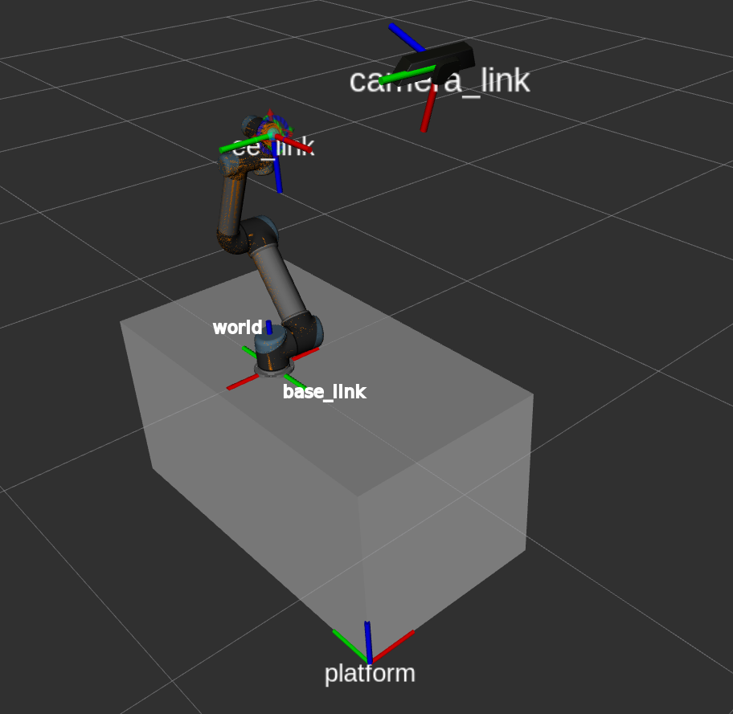
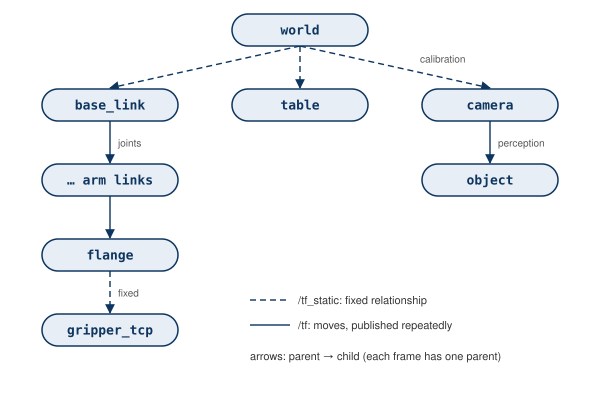
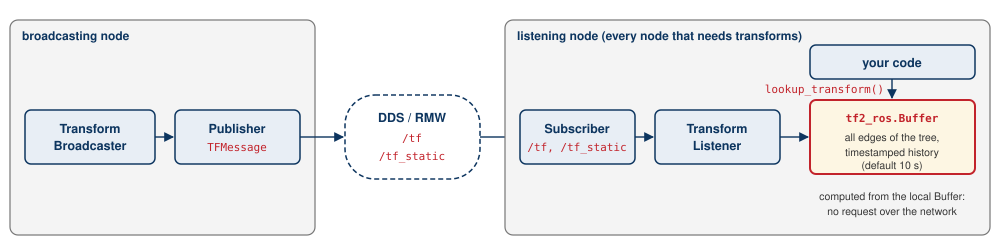
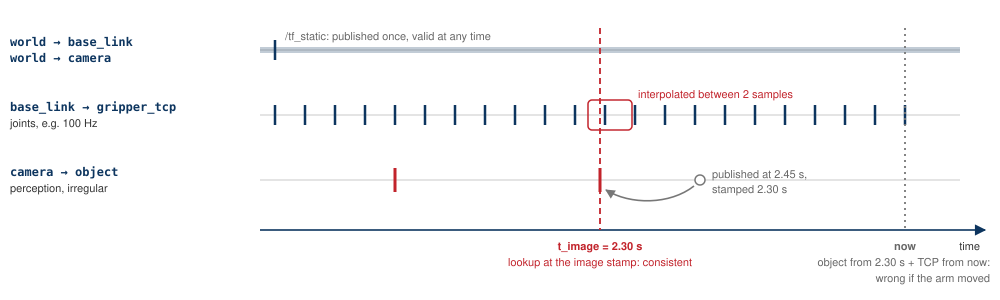
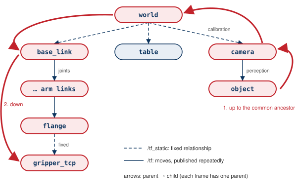
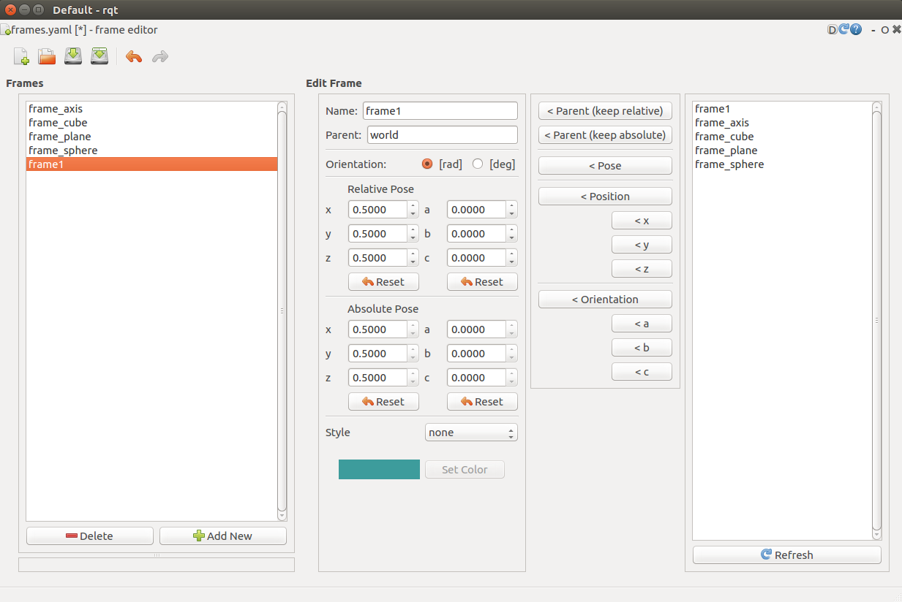
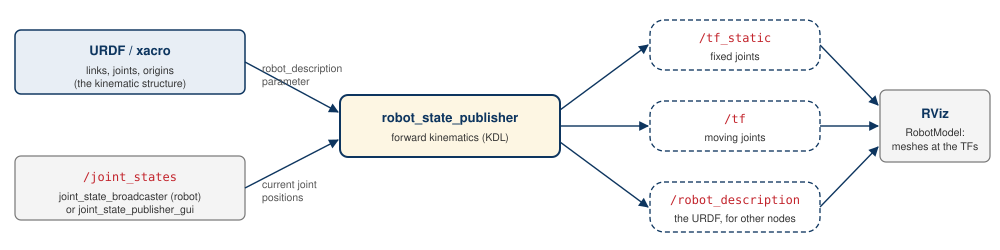

layout: true <div class="header"><img src="../../common/logo/ros_industrial_logo.png" alt="ROS-Industrial" style="background-color:transparent"/></div> <div class="footer"><img src="https://www.ipa.fraunhofer.de/content/dam/ipa/ipa.svg" /><p>© Fraunhofer IPA</p></div> <div class="triangle"></div> --- class: center, middle name: main_title # TF2 - TRANSFORMS IN ROS 2 ### Coordinate frames, broadcasters and listeners After this session you can navigate a TF tree, create and move frames, broadcast and look up transforms in Python, and explain how URDF, joint states and TF2 fit together. --- ## Why do we need TF2? .cols[ .forty[ <p></p> ] .sixty[ A robot cell has many coordinate frames: - robot base, every link, the flange - gripper TCP - camera - table, fixtures - workpieces <br/> **The camera detects an object. Where is the object relative to the robot base?** <br/> TF2 keeps track of how all frames relate to each other **over time**, and answers this question for any pair of frames. ] ] --- ## The TF tree .cols[ .sixty[ <p></p> ] .forty[ - **Nodes** are coordinate frames - **Edges** are transforms that someone publishes (parent → child) - Each frame has **one parent**: the graph is a tree - Transforms can be composed and inverted - Indirect transforms (e.g. `base_link` → `object`) are **computed on demand**, never published ] ] --- class: dense ## Static and dynamic transforms | | Static TF | Dynamic TF | |---|---|---| | Topic | `/tf_static` | `/tf` | | Example | Camera mounting, fixed joint, table position | Moving robot joint, detected object | | Publication | Typically once | Repeatedly, e.g. at 50–500 Hz | | DDS durability | Transient local: late subscribers still receive it | Volatile: only new messages | | Storage in each node's `tf2_ros.Buffer` | Valid at any time, no expiration | Timestamped history (default 10 s) | <br/> - Use static transforms only for **permanent** relationships. A static transform that changes means a wrong model - `robot_state_publisher` publishes both: fixed joints on `/tf_static`, moving joints on `/tf` - **A static publisher must keep running.** Late subscribers get `/tf_static` from the publisher's DDS history: if that node stops, nodes started afterwards never receive the transform - Publish a static transform from the command line: `ros2 run tf2_ros static_transform_publisher --x 0.4 --frame-id table --child-frame-id fixture` --- ## TF2 under the hood <p></p> - Transforms are ordinary ROS 2 messages (`tf2_msgs/msg/TFMessage`) on two topics - Broadcasters and listeners wrap a publisher and a subscriber - **Each listening node has its own `tf2_ros.Buffer`**: a lookup is a local computation, not a network request - The TF2 core (`BufferCore`) is independent of ROS: the ROS layer only fills it --- ## Transforms over time <p></p> - Each source publishes at its own rate. Each node's `tf2_ros.Buffer` (slide 5) keeps the timestamped history of every edge (default 10 s) - Look up at the **timestamp of your data**: `lookup_transform("gripper_tcp", "object", image_stamp)`. TF2 interpolates between the samples around that time - A time that is not in the `tf2_ros.Buffer` yet, or no longer, raises an `ExtrapolationException` - `rclpy.time.Time()` means "the latest time at which all needed transforms are available" --- class: dense ## What happens during a lookup? .cols[ .sixty[ <p></p> ] .forty[ `lookup_transform("gripper_tcp", "object", t)` 1. Walk up from both frames to their **common ancestor** (`world`) 2. Compose the transforms along the path, inverting the ones walked against the arrows 3. Interpolate each dynamic transform at time `t` | Robot cell example | | |---|---:| | Frames | 300 | | Stored edges | 299 | | Possible transforms | 89,700 | | Network requests | 0 | ] ] --- class: dense, small-code ## Broadcasting and listening .cols[ .sixty[ ```python from geometry_msgs.msg import TransformStamped from rclpy.time import Time from tf2_ros import (Buffer, TransformBroadcaster, TransformListener, TransformException) # Broadcaster: one edge parent -> child # (StaticTransformBroadcaster for /tf_static) self.broadcaster = TransformBroadcaster(self) t = TransformStamped() t.header.stamp = self.get_clock().now().to_msg() t.header.frame_id = "table" t.child_frame_id = "object" t.transform.translation.x = 0.3 t.transform.rotation.w = 1.0 self.broadcaster.sendTransform(t) # Listener: fills a local tf2_ros.Buffer from /tf and /tf_static self.buffer = Buffer() self.listener = TransformListener(self.buffer, self) try: # pose of "object" expressed in "base_link", latest available tf = self.buffer.lookup_transform( "base_link", "object", Time()) except TransformException as e: self.get_logger().warn(str(e)) ``` ] .forty[ `lookup_transform(target_frame, source_frame, time)` - The node must **spin**. Right after start the buffer is empty: catch `TransformException`, or pass a `timeout` - Transform data: `buffer.transform(point, "base_link")` (`import tf2_geometry_msgs`) - Quaternion ↔ roll/pitch/yaw: `tf_transformations` Tools: - `ros2 run tf2_ros tf2_echo base_link object` - `ros2 run tf2_ros tf2_monitor`: rate, delay - `ros2 run tf2_tools view_frames`: PDF of the tree - `ros2 topic info /tf_static --verbose` ] ] .note[Exercise: [tf2_python_capabilities_demo](https://github.com/ROS-Industrial-Session-B/tf2_python_capabilities_demo) with a mocked cell (session B) · write your own: [TF2 tutorial](../../../_source/basics/ROS2-TF2.html) (workshop: ROS 2 Basics → TF2)] --- ## Creating frames interactively: the Frame Editor .cols[ .fifty[ <p></p> ] .fifty[ rqt plugin `frame_editor` (IPA): - Add frames, choose their parent, type in positions and orientations - Move them with an interactive marker in RViz - Change the parent, keeping the relative or the absolute pose - Save the frames to a YAML file and load them again - URDF panel: see your frames as URDF links and joints, export them as a xacro macro Useful to place a camera, a fixture or a TCP by hand before writing it into the robot description. ] ] .note[Exercise: [frames with the Frame Editor](https://github.com/ROS-Industrial-Session-B/root_project_session_B/blob/main/exercices/01_tf_urdf/frame_editor.md) (draft, session B)] --- class: dense ## From URDF to TF2 <p></p> .cols[ .fifty[ | URDF element | In the TF tree | |---|---| | `link` | A frame | | `joint` | The edge parent link → child link | | `origin` of a joint | The transform when the joint is at 0 | | `axis` + joint position | The motion added on top | ] .fifty[ - The URDF describes the **kinematic structure**, `/joint_states` the **current positions** - `robot_state_publisher` computes and publishes the link transforms - RViz draws the URDF geometry at the TF poses ] ] .note[More on URDF and xacro: [URDF introduction](../../../_source/manipulation/urdf/01_urdf_introduction.html) and the [Cartesian robot exercise](../../../_source/manipulation/urdf/02_urdf_xacro_exercice_cartesian_robot.html) (workshop: ROS 2 Manipulation → Robot Description)] --- class: dense ## Putting it together .cols[ .fifty[ | Component | Responsibility | |---|---| | URDF | Physical and kinematic structure | | Joint state broadcaster | Current joint positions | | Robot state publisher | Link transforms from URDF + joint states | | TF broadcaster | Other relationships: calibration, perception, ... | | DDS | Transports `/tf` and `/tf_static` | | `tf2_ros.Buffer` | Stores and resolves transforms, one per node | | RViz | Visualizes geometry and frames | ] .fifty[ Three ways to create frames: | Tool | Mechanism | |---|---| | Frame Editor | Interactive | | Python broadcasters | Programmatic | | URDF + robot state publisher | Model-based | <br/> **All three contribute to the same distributed TF tree**, whatever generated the transforms. ] ]